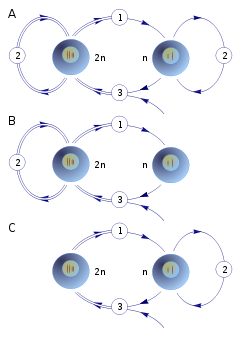

La reproducción asexual está relacionada con el mecanismo de división mitótica. Se caracteriza por la presencia de un único progenitor,
el que en parte o en su totalidad se divide y origina uno o más individuos con idéntica información genética. En este tipo de reproducción no intervienen células sexuales o gametos,
y casi no existen diferencias entre los progenitores y sus descendientes, las ocasionales diferencias son causadas por mutaciones.
En la reproducción asexual un solo organismo es capaz de originar otros individuos nuevos, que son copias exactas del progenitor desde el punto de vista genético.
Un claro ejemplo de reproducción asexual es la división de las bacterias en dos células hijas, que son genéticamente idénticas. En general, es la formación de un nuevo individuo a partir de células maternas,
sin que exista meiosis, formación de gametos o fecundación. No hay, por lo tanto, intercambio de material genético (ADN). El ser vivo progenitado respeta las características y cualidades de sus progenitores.
regresar